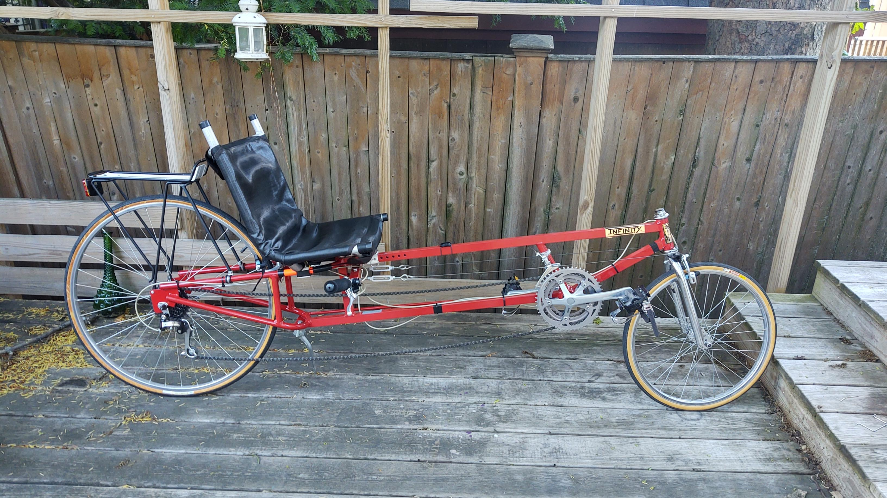
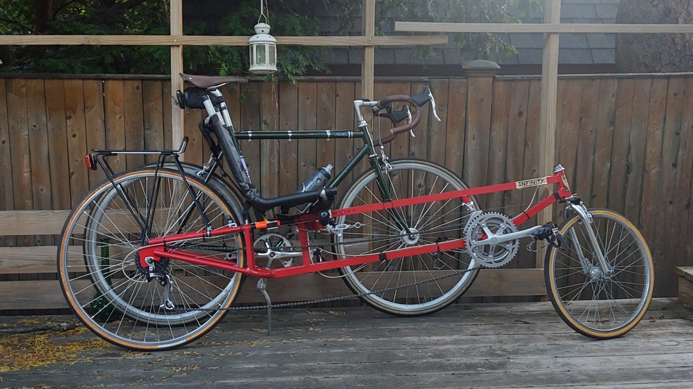
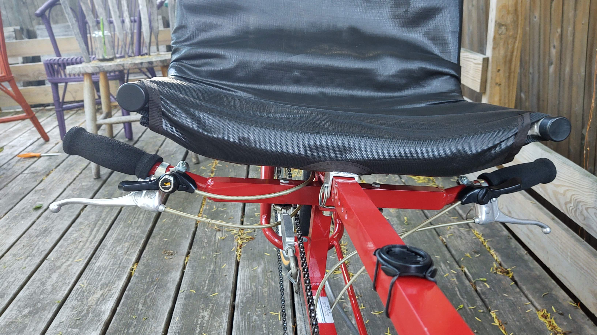
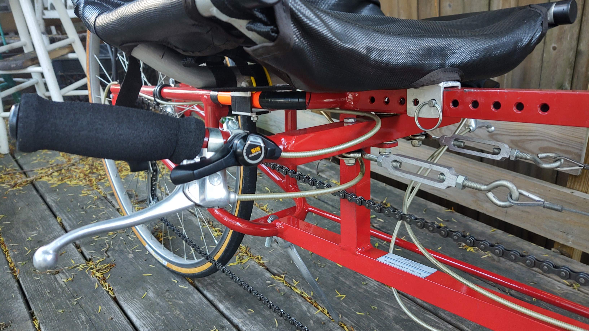
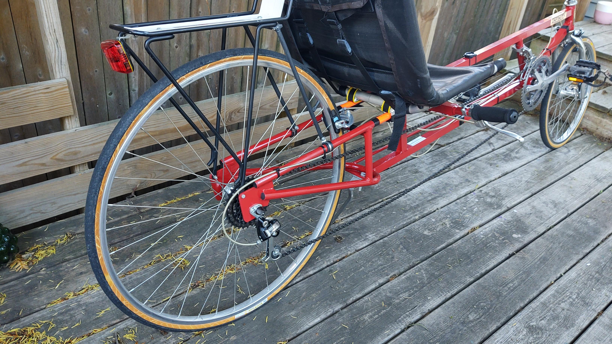
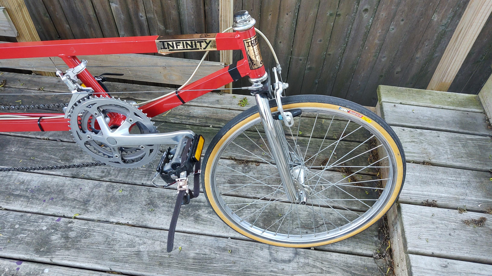
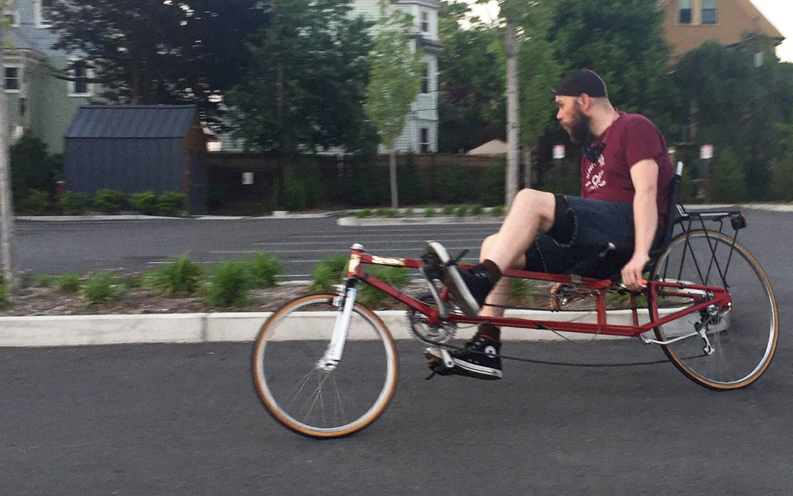

I bought an Infinity recumbent bike. There isn't a lot of easily accessible information about this make of bike on the web (the manufacturer does not appear to have made bikes for some time or, you know, have a website), so in addition to sharing some pictures of the bike, I'll post some specs and information about it too.
I drove down to the cape just about two weeks ago and picked up this beautiful recumbent bike I found on Craigslist.
This is an Infinity long-wheelbase recumbent with under-seat steering, manufactured by Ace Tool & Engineering of Mooresville, Indiana.
I bought this bike from the original owners, who purchased it in Florida in 1992. It was only ridden a handful of times before they moved back to Massachusetts, and once they moved here they basically stopped riding it. That means it is still in excellent condition; most of the components are only lightly worn – there's some oxidation on exposed metal components and some wear on the paint where the seat makes contact with the frame, but that's about it.
The first thing you might notice is that it is very long. I don't think I realized just how long it was until I brought it in the house and saw next to other things. The manual for the bike (which I actually found and have reposted here) lists the wheelbase as 67 inches (the distance between where the two tires touch the ground). For comparison, my Fuji Feather, in the photo below for comparison, has a wheelbase of about 38.5 inches:
The Infinity has an aluminum frame and is startlingly light, given its size – I'd reckon less than 30 lbs as it's currently configured. Despite the length, the bike actually handles very well, though one has to be somewhat more deliberate about turning and maneuvering through tight spots than with an upright bike. The hardest thing for me to get used to has been starting the bike from a standstill (especially if I'm facing uphill); you have to make sure that the bike is in a low enough gear when you stop to get yourself moving when it comes time again to start since you can't easily push off the pavement with your feet.
As mentioned, the handlebars are directly under the seat. They are connected to the front fork by aviation cables which pull on each side of the fork when the handlebars are turned. The tension is adjusted with the turnbuckles which should be visible in the two photos below.
Otherwise, the bike operates just like a normal bike (once you learn how to balance). The brake levers and shifters are mounted on the handlebars just as they would be on an upright bike.
The rear end is also, more or less, like a normal bike, though shaped somewhat differently. The brake calipers sit directly behind the seat. The previous owner also put a fairly nice rack on the back, so I can use the bike to carry things. Some recumbents have a small rear wheel that matches the front one. A rear wheel with a smaller circumference cannot get the bike moving at as high a speed as a full-size wheel.This model has a full 27-inch road wheel in the back, so you can get it up to fairly good speeds (though hope to upgrade the wheel to a more modern 700C some day).
The front end is also a bit different from a normal bike. In the photo below, you can see where the aviation cables attach to the fork so that the bike can be steered. The front wheel is a much smaller 20" wheel (and the previous owner also gave me a couple really nice spare road 20" road tires, which can be a bit tricky to find). The fork is a normal threaded fork (this one actually looks like it's for a a bmx bike!), but without handlebars or a stem.
It is in wonderful shape for a bike its age, mostly due to the fact that it seems to have spent most of the last three decades just hanging in a garage, but it does need some work. The cabling is old and modern cables just work more smoothly. The drive train makes a lot of noise and shifting gears is not very smooth, though I've already made some progress by just cleaning the chain and the gears. I'd like to upgrade to seven- or eight-speed index shifting in the future. There's a lot of play in the handlebars, and I need to get some washers to hold them in place better. The brake calipers are old side-pulls like ones you'd find on bikes from the 70s and early 80s and while they are functional, modern side-pulls work and feel much better (not to mention, I just can't get these old ones centered). One issue that concerns me is that the right-hand steering cable makes contact with the front derailleur when the chain is on the largest chain ring. I don't think it's cause for alarm (yet), but I worry that this negatively affects the steering and the shifting.
Even in its current state, it is a hell of a lot of fun to ride. Because the center of gravity is so low, cornering in it just feels…good, even with the limited turning radius. The long wheelbase, the large seat, and the fact that you don't have to support any of your weight on your arms means that hitting bumps doesn't hurt quite as much. People sure like to stare at you as you ride it, I can tell you that kids get really excited when they see it.
I spent some time getting used to riding it in a nearby parking lot. Please pardon my quarantine beard. Below I include of list of components that came on the bike, which I assume are mostly original. I'm listing these here because detailed information about the bike on the internet is scant. I suspect that the bike sold with different components at different points of its lifetime and may have varied a bit if they were built at a shop rather than by the manufacturer (it was possible to buy just the frame and not a complete bike).
There's not a lot of other information about this model of bike on the internet, so I thought I'd aggregate some of the links that I read while researching the bike before I bought it.
{kind=link}
{kind=link}
{kind=link}
{kind=link}
{kind=link}
{kind=link}
{kind=link}
{kind=link}
{kind=link}